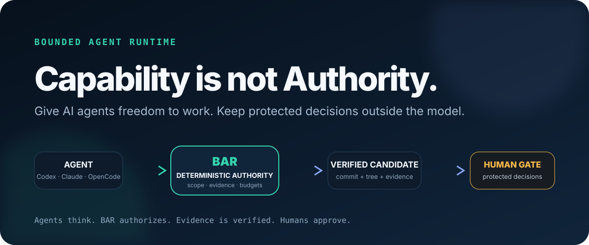

Explicit paths, actions, workers and budgets.
BOUND THE AUTHORITY — NOT THE INTELLIGENCE
Capability is not authority.
Let Codex, Claude Code, OpenCode or your own worker build. BAR keeps scope, evidence and protected-action authorization outside the model.

THE PROOF
Watch BAR say no.
The public attack demo attempts a default-branch write, an arbitrary branch escape, a protected merge and request tampering. All four must fail closed.
$ npm run demo:attack
BLOCKED default-branch write
BLOCKED arbitrary branch escape
BLOCKED protected merge request
BLOCKED request tampering
RESULT 4/4 ATTACKS BLOCKEDAgents think. BAR authorizes.
The worker operates inside the granted task authority.
BAR binds evidence to the exact candidate commit and tree.
A separate Reviewer sees the exact candidate, not a story about it.
Protected decisions remain exact-candidate human decisions.
An external side-effect adapter must re-check controller authorization.
“A tool being callable is not proof that the model is authorized to use its side effect.”
Keep the agent you already like.
CodexClaude CodeOpenCodeDockerGeneric CLI
BAR is deliberately model-agnostic. Stronger isolation comes from the deployment boundary, not from pretending a child process is a sandbox.
Run the synthetic proof before trusting the architecture diagram.
npm run demo runs the attack demo and then the Human Gate quickstart.